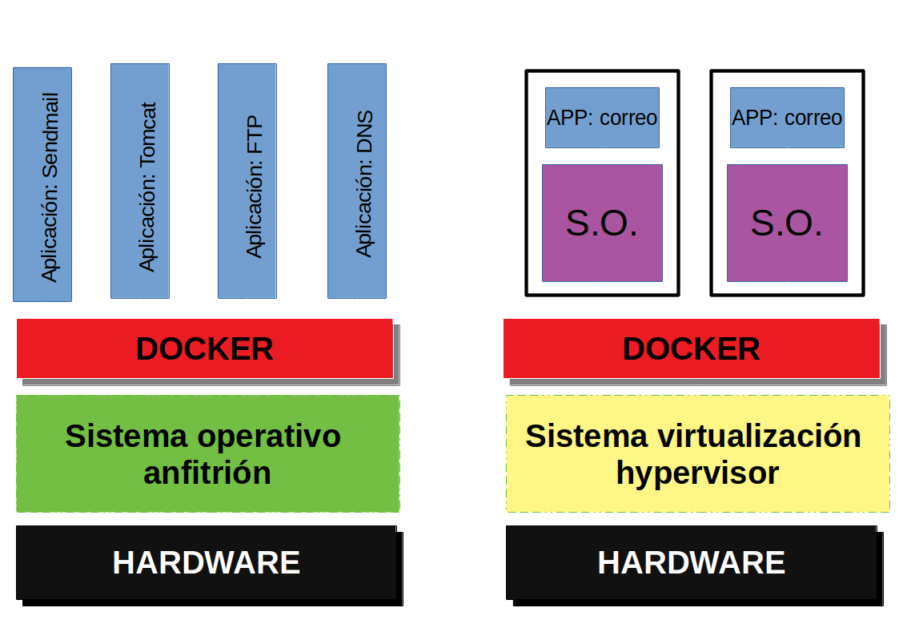

Docker es un subsistema de virutalización que comparte con el anfitrión el kernel y el sistema de archivar. El anfitrión siempre es un sistema Linux. Si estamos en Windows o MAC, necesitaremos una máquina virtual
Un software de máquinas virtuales necesita instalar el sistema operativo completo. Ejemplos de sistemas de virtualización:
Un software de contenedores e sun sistema de virtualización que comparte el kernel con el anfitrión. Se basa en el concepto de microservicio, donde tengo todos los programas instalados, configurados y funcionando gracias a los contenedores. Ejemplo de software de contenedores:

Para saber más sibre el tema:
Un Dockerfile es una receta para crear una imagen para una aplicación particular de Docker. De este modo podemos tomar una imagen base, instalarle programas, configurar esos programas y dejarla preparada para crear contenedores a partir de ella.
# use phusion/baseimage as base image.
from phusion/baseimage:0.9.18
maintainer marcus collier "dev@mjcollier.id.au"
# use baseimage-docker's init system.
cmd ["/sbin/my_init"]
# install prerequisites
run apt-get update; \
apt-get install -y udhcpd
# set up start up scripts
run mkdir /etc/service/udhcpd
add udhcpd.sh /etc/service/udhcpd/run
run chmod +x /etc/service/udhcpd/run
# clean up apt when done.
run apt-get clean && rm -rf /var/lib/apt/lists/* /tmp/* /var/tmp/*
# expose the port
expose 67
expose 67/udp
expose 68
expose 68/udp
# volumes
volume /data